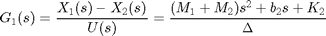
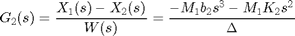
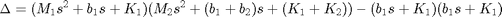
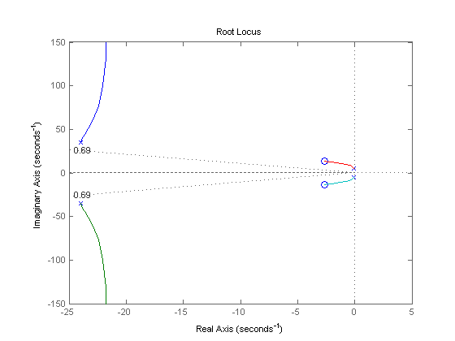
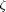
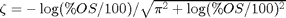
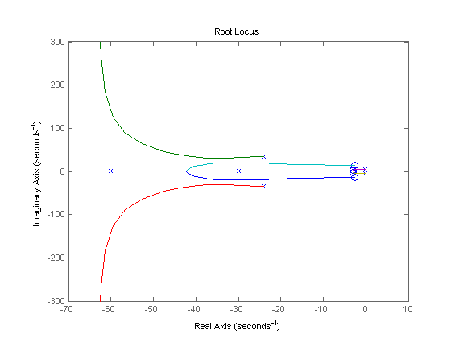
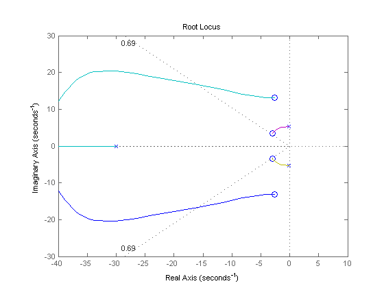
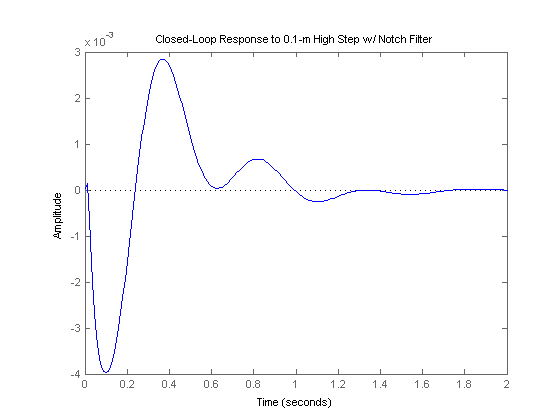

Suspension: Root Locus Controller Design
Key MATLAB commands used in this tutorial are: tf , roots , rlocus , sgrid , step
Contents
From the main problem, the dynamic equations in transfer function form are the following:
(1)
(2)
where,
(3)
and the system schematic is the following where F(s)G1(s) = G2(s).

For the original problem and the derivation of the above equations and schematic, please refer to the Suspension: System Modeling page.
We want to design a feedback controller so that when the road disturbance (W) is simulated by a unit step input, the output (X1-X2) has a settling time less than 5 seconds and an overshoot less than 5%. For example, when the bus runs onto a 10 cm high step, the bus body will oscillate within a range of +/- 5 mm and will stop oscillating within 5 seconds.
The system model can be represented in MATLAB by creating a new m-file and entering the following commands (refer to the main problem for the details of getting those commands).
m1 = 2500; m2 = 320; k1 = 80000; k2 = 500000; b1 = 350; b2 = 15020; nump=[(m1+m2) b2 k2]; denp=[(m1*m2) (m1*(b1+b2))+(m2*b1) (m1*(k1+k2))+(m2*k1)+(b1*b2) (b1*k2)+(b2*k1) k1*k2]; G1=tf(nump,denp); num1=[-(m1*b2) -(m1*k2) 0 0]; den1=[(m1*m2) (m1*(b1+b2))+(m2*b1) (m1*(k1+k2))+(m2*k1)+(b1*b2) (b1*k2)+(b2*k1) k1*k2]; G2=tf(num1,den1); numf=num1; denf=nump; F=tf(numf,denf);
We are now ready to design a controller using the root locus design method.
First let's see what the open-loop poles of the system are:
R = roots(denp)
R = -23.9758 +35.1869i -23.9758 -35.1869i -0.1098 + 5.2504i -0.1098 - 5.2504i
Therefore, the dominant poles are the roots -0.1098+/-5.2504i, which are close to the imaginary axis with a small damping ratio.
Plotting the root locus
The main idea of root locus design is to estimate the closed-loop response from the open-loop root locus plot. By adding zeros and/or poles to the original system (adding a compensator), the root locus and thus the closed-loop response will be modified. Let's first view the root locus for the plant. In your m-file, add the following command and then run the file, you should get the root locus plot below:
rlocus(G1) z=-log(0.05)/sqrt(pi^2+(log(0.05)^2)) sgrid(z,0)
z =
0.6901
 Note from the specification, we required the overshoot, , to be less than 5% and damping ratio, , can be find from approximation damping ratio equation, . The command sgrid is used to overlay the desired percent overshoot line on the close-up root locus; you can find more information from commands list.
From the plot above, we see that there are two pair of poles and zeros that are very close together. These poles and zeros are almost on the imaginary axis, they might make the bus system marginally stable, which might cause a problem. We have to make all of the poles and zeros move into the left-half plane as far as possible to avoid an unstable system. We have to put two zeros very close to the two poles on the imaginary axis of uncompensated system for pole-and-zero cancellation. Moreover, we will put another two poles further to the left on the real axis to get fast response.
Adding a notch filter
We will probably need two zeros near the two poles on the complex axis to draw the root locus, leading those poles to the compensator zeros instead of to the plant zeros on the imaginary axis. We'll also need two poles placed far to the left to pull the locus to the left. It seems that a notch filter (2-lead controller) will probably do the job. Let's try putting the poles at 30 and 60 and the zeros at 3+/-3.5i. In your m-file add the following lines of code:
z1=3+3.5i; z2=3-3.5i; p1=30; p2=60; numc=conv([1 z1],[1 z2]); denc=conv([1 p1],[1 p2]); C=tf(numc,denc); rlocus(C*G1)
Now let's change the axis to see the details of the root locus.
axis([-40 10 -30 30]) z=-log(0.05)/sqrt(pi^2+(log(0.05)^2)) sgrid(z,0)
z =
0.6901
 Finding the gain from the root locus
Now that we have moved the root locus across the 5% damping ratio line, we can choose a gain that will satisfy the design requirements. Recall that we want the settling time and the overshoot to be as small as possible. Generally, to get a small overshoot and a fast response, we need to select a gain corresponding to a point on the root locus near the real axis and far from the imaginary axis or the point that the root locus crosses the desired damping ratio line. But in this case, we need the cancellation of poles and zeros near the imaginary axis, so we need to select a gain corresponding to a point on the root locus near the zeros and percent overshoot line. There is a method to do this with the rlocfind command in MATLAB. Add the code [k,poles]=rlocfind(C*G1) onto the end of your m-file to help you choose a specific loop gain. After running in the command window, go to the root locus plot and select a point near those indicated by the cross marks on the plot below.

After doing this, you should see the following output in the MATLAB command window.
Select a point in the graphics window
selected_point =
-2.8555 + 3.6335i
k =
1.0030e+08
poles =
1.0e+02 *
-0.6321 + 5.9650i
-0.6321 - 5.9650i
-0.0296 + 0.1306i
-0.0296 - 0.1306i
-0.0292 + 0.0368i
-0.0292 - 0.0368i
Note that the value returned from your MATLAB command window may not be exactly the same, but should at least have the same order of magnitude. This returned value can be used as the gain for the compensator. Recall that the schematic of the system is the following:
and the closed-loop transfer function can be derived as following:
k = 1.0030e+08; sys_cl=F*feedback(G1,k*C);
Plotting the closed-loop response
Let's see what the closed-loop step response looks like with this compensator. Keep in mind that we are going to use a 0.1-m high step as the disturbance. To simulate this, simply multiply sys_cl by 0.1. Add the following commands into the m-file and put % marks in front of all rlocus and rlocfind commands.
t=0:0.01:2;
step(0.1*sys_cl,t)
title('Closed-Loop Response to 0.1-m High Step w/ Notch Filter')
 From this plot we see that when the bus encounters a 0.1 m step on the road, the maximum deviation of the bus body from the wheel (or the road) is about 3.75 mm, and the oscillations settle in 2 seconds. Thus this response is satisfactory.